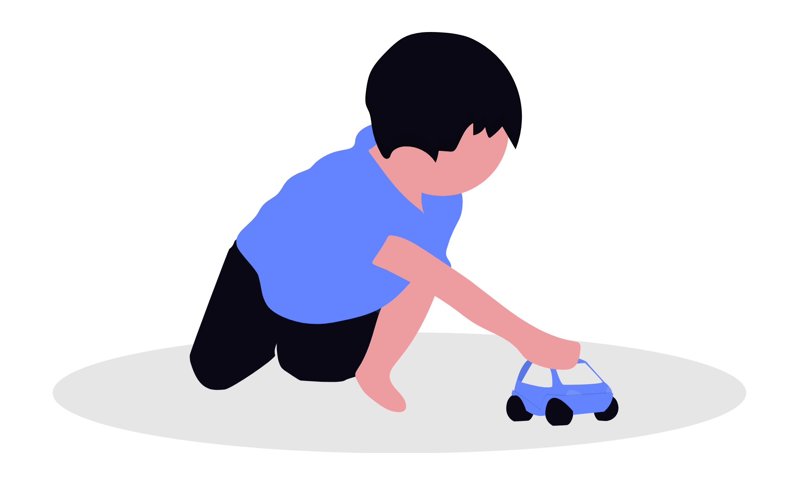

Bienvenidos a MediControl
Sistema diseñado para ayudar a los adultos mayores a llevar un control seguro y organizado de sus medicamentos, horarios y dosis diarias.
Recordatorios Inteligentes
Recibe alertas para tomar cada medicamento a la hora indicada y evitar olvidos.
Calendario de Medicación
Organiza tratamientos, horarios y seguimiento de medicamentos de forma sencilla.

Bienestar del Paciente
Facilita el seguimiento de tratamientos para mejorar la calidad de vida de los adultos mayores.